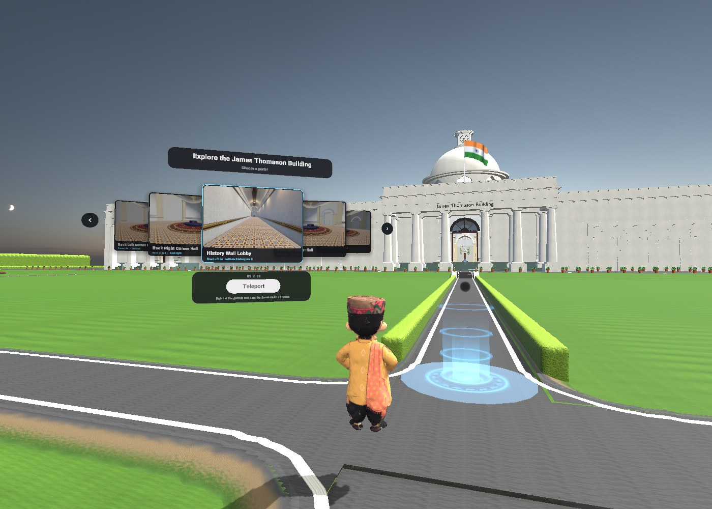
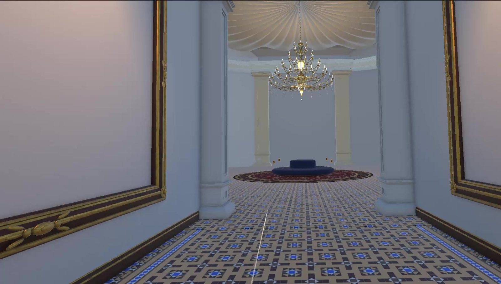
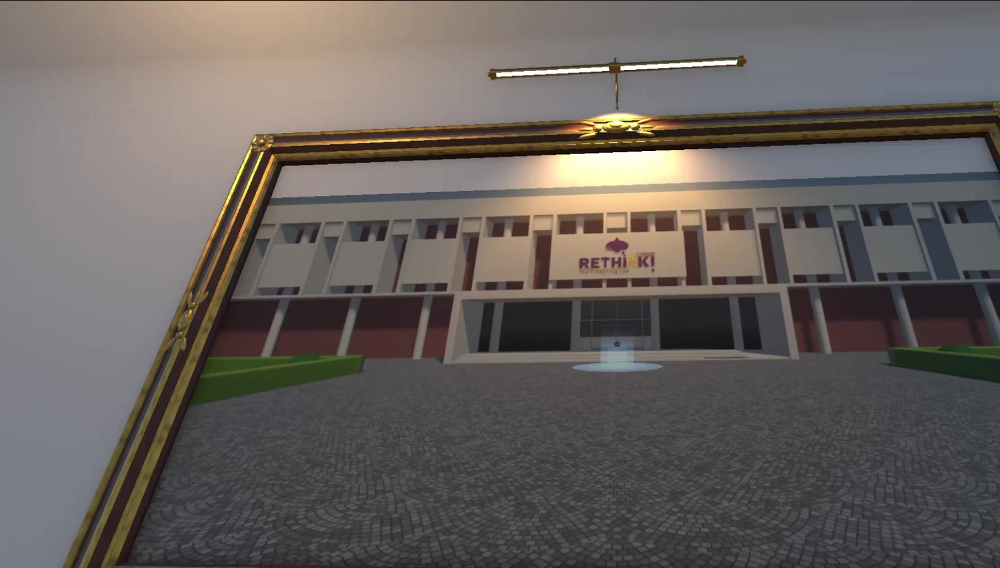
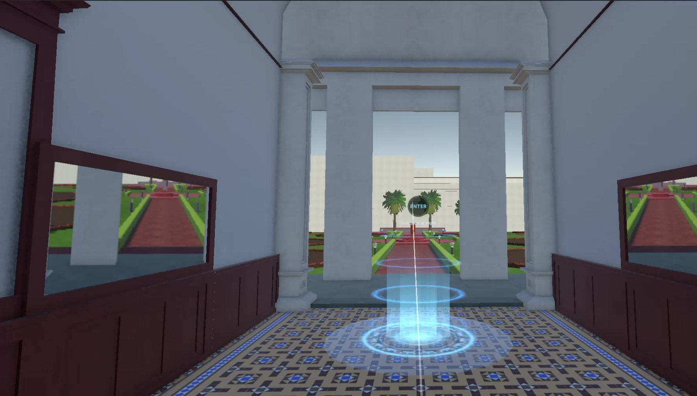
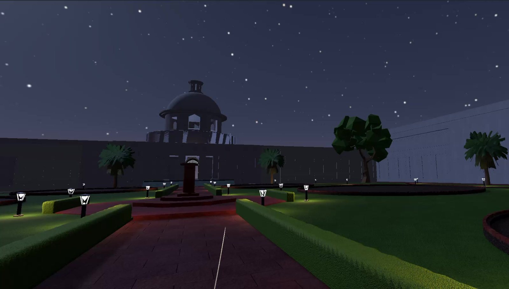
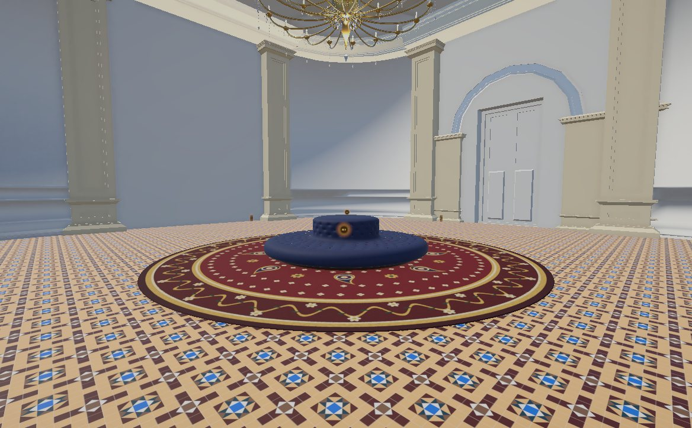

(Scroll for more)
Made for IIT Roorkee
Role in project is VR design & development
Platform is Meta Quest 2 · PC VR
Date is Ongoing, 2026
An interactive VR recreation of the IIT Roorkee campus with Jyun, an AI guide who sees what you see and answers in your own voice, and a hands-on sand-moulding laboratory that teaches a foundry process step by step.
Built with: Unity 6 (URP), OpenXR, XR Interaction Toolkit, C#, Blender
AI stack: on-device Whisper speech-to-text, local LLM via Ollama, FastAPI knowledge backend, text-to-speech





(01)Context
IIT Roorkee's VR initiative brings two experiences together: a virtual campus that gives incoming students a sense of place before they arrive, and a virtual mechanical engineering lab that teaches a manufacturing workflow by doing it, built as an educational tool rather than a game.
The campus starts at the James Thomason Building (JTB): its lawns and entrance, the domed main hall, the galleried corridors and corner halls, a history timeline wall, and day and night versions of the scene. From there, scenes branch out to the Rethink lab, the CSE department and the Mechanical department.
(02)The problem
A campus this large and storied is hard to grasp from maps and brochures, and lab orientation depends on physical access, scheduling and supervision. The challenge was to make a VR space that people can find their way around, that explains itself, and that teaches a real procedure, while running smoothly on a standalone Quest 2.
(03)The process
Building the campus
Buildings were modelled in Blender and refined in Unity: Kota-stone stairs, rebuilt doors, a history wall carrying a 16K timeline image, a sunny daytime sky, and baked lighting with light probes. A portal hub on the JTB lawn floats five portals (History Wall Lobby and four corner halls), each with preview images; framed photographs can be "dived" into; and a 360° gallery in the CSE department opens real panoramas.
Comfort first
Smooth turning at 90°/s, teleport arcs that work across every outdoor surface, an edge guard and fall rescue, a quick re-position button, fade transitions, and locomotion that pauses while you aim at a menu.
Designing Jyun
Jyun is a stylised Uttarakhandi guide who follows at a comfortable distance and repositions only when you move away. He is wall-aware, snaps to stairs and ramps, notices when you look at him, and recognises the exhibit you are gazing at. To keep him running on Quest 2, his model was optimised from 395k to 31.6k triangles.
(04)The solution
Jyun, the AI guide
- Talk naturally: hold-to-talk speech recognition runs on-device with Whisper (about 0.4 s), and replies come from a free local LLM in about 1–3 s, spoken aloud with subtitles phrase by phrase.
- Only verified answers: Jyun answers from a knowledge base of 110 IIT Roorkee facts, most from iitr.ac.in and each with a source link. When he doesn't know, he says "I don't know that yet" instead of guessing.
- Context-aware: he knows which area you are in, what you are looking at and what you are holding, and can act on a request, such as moving you to a hall or opening an exhibit panel, but only through actions the scene allows.
The sand-moulding lab
- A 13-step foundry procedure, from sieving and ramming sand to drawing the pattern and venting the mould, run by a deterministic controller. The AI explains the steps but never decides whether one is correct.
- A lab built around learning: an experiment dashboard, a step-synced cross-section display with a pour simulation, and a Jyun assistant screen with quick questions.
- A believable foundry shed, with PPE and tool stations, safety signage, baked lighting, spatial audio, hover glows, haptics and first-use tips for every tool.
- An automated test plays all 13 steps through in about 22 seconds, including after a reset.
(05)What's next
The project is ongoing. Next up: deeper context-aware navigation, importing IIT Roorkee's own material into Jyun's knowledge base, validating the lab sequence against the institute's lab manual, and measuring performance on Quest 2. The aim is to evaluate the experience with students and turn it into HCI and XR research.
Figma file
Your Figma file goes here
Add the share link to data-figma="" in this page's HTML, or preview one now: